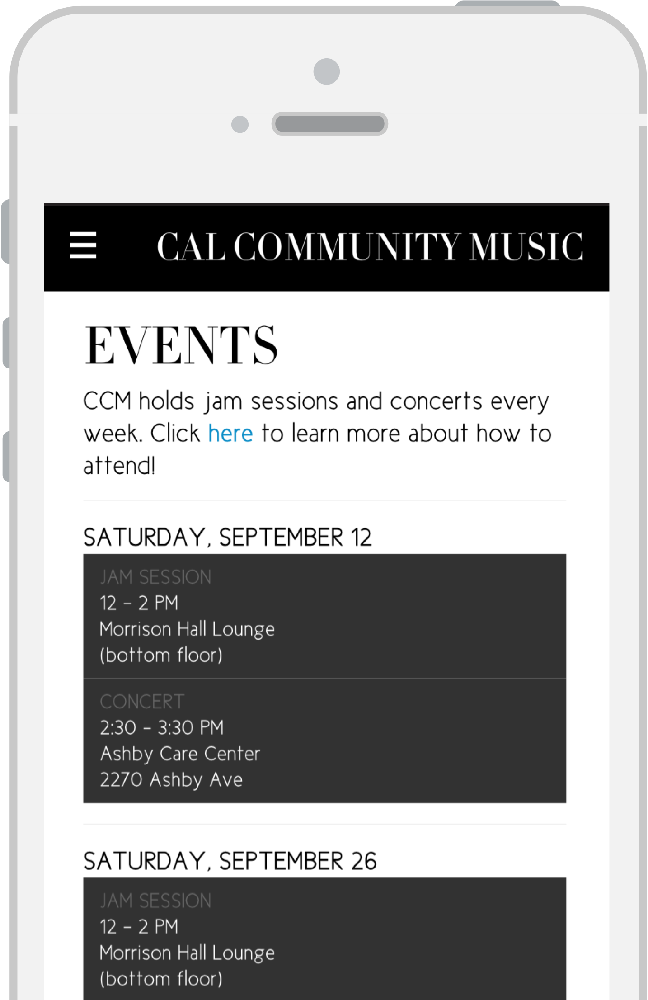
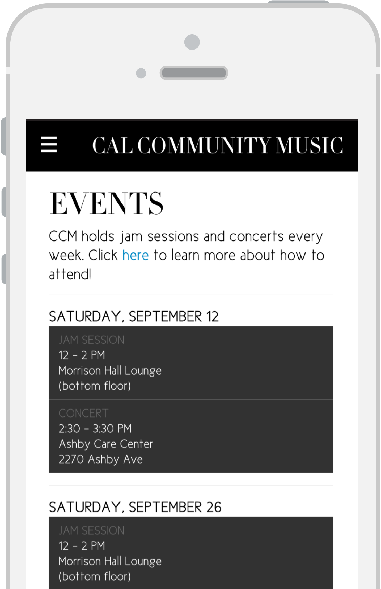

Cal Community Music
Branding, Web DesignTools Used
- Illustrator
- HTML + CSS
- Javascript + jQuery
- Angular.js
Overview
Cal Community Music is a group of student and alumni musicians dedicated to serving the Berkeley senior community through music, performing at various nursing homes in Berkeley as well as hosting jam sessions and social events to provide a platform for musicians to meet and collaborate. As a coordinator of Cal Community Music, I took it upon myself to give the club a new look as part of a larger effort to attract more members.
Since CCM had no exisiting logo or brand, I was essentially starting with a blank slate. I began with creating a logo to unify the club under one iconic image, which was inspired by Igor Garybaldi’s logo for Music Town. I put my own Berkeley spin on it by playing with negative space to depict UC Berkeley’s Campanile in order to distinguish the club as a Cal organization.
Next, I decided to put my web design skills to practice by designing and building a new website for CCM. Since the website would play a key role in getting students to join our club, I made use of some photos we had in order to visually give our audience a clearer idea of what the club does and how it operates the very first time they visit our website.
 
Since the club’s main activity is performing at local senior homes and hosting jam sessions before the performances, I wanted to make sure that the event schedule was a highlighted feature of the website and could be easily viewed on a mobile device for a member to quickly check the website for where the next concert is scheduled to be. On the desktop view of the website, members can also see a map of all of our event locations. Just for practice, I used Angular.js to read the event information from a JSON file and render it onto the event page.